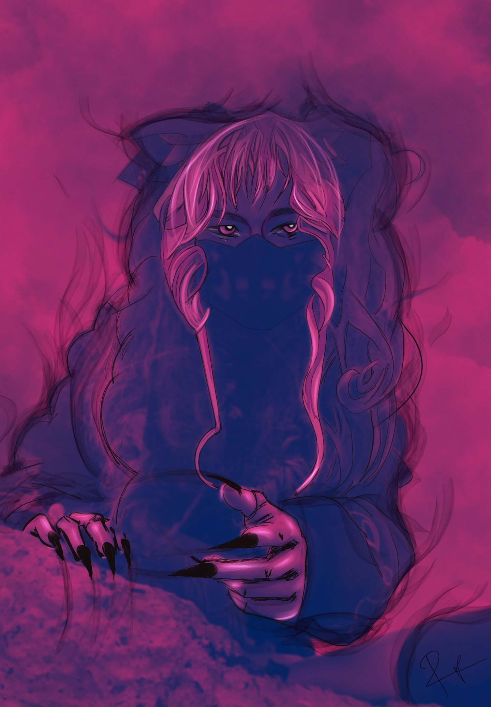

Art by RhiWhenever life takes me somewhere new — a place yet to be explored — I'll start my journey where most would. Amongst the crowd, the first spawn point on the map, page one. The beginning of whatever story is about to unfold.
But I'm not interested in the stories that have been told.
I want to know about the gloomy path everyone averts their eyes from. What's behind the hidden door. What lies within the cover if you take a scalpel so gently to the edge of its paper. I want to know everything this world has to offer.
It'll probably be the death of me.
Born and living in Australia — raised, more or less, by a pack of wolves. The only thing that came from it was the darkest sense of humour I'm not afraid to share with the world.
Art became my world, or rather, a place to build one of my own. Somewhere to take everything that needs to be released and hone it into something beautiful, powerful, funny, sad — whatever the story needs to tell. I'm a multimedia artist who has never met an art form I didn't immediately need to try: scale maille, sculpture, sumi-e, printmaking, painting — even sad girl writing, if you dare to find it. I don't believe in specialising. The process of learning something new is the art.
Fashion is how I speak when words aren't enough. It's armour, it's art, it's the first thing I reach for when I need to say something about who I am that day — soft and dangerous, delicate and defiant, and I've never wanted to choose between the two.
Then there's the nerd in me, which takes up considerable real estate. sci-fi, anime, board games, D&D, video games — I contain multitudes. I played WoW on and off for eight years, never well, only ever really questing. When RDR2 came out the horse girl in me wanted to ride the pretty ponies — and those pretty ponies led me to developing a love for action RPGs. RDR2 and a long-standing love for the Game of Thrones universe led me to Elden Ring, now my favourite game. I went in completely blind, never having touched a Souls game before or really knowing what I was getting into. I am, to this day, yet to get gud.
What is Lyra's Winter?It's a world. My world. Named for me — but built for everyone.
Even when it's cold, you find the beauty in it. Even when things are dark, if you choose happiness, it's there. I want to create a space that is pure joy — community, kindness, humour, and the occasional piece of art that makes you feel something you weren't expecting.
We're in a rough world right now. I think we all need a laugh more than anything.
Lyra's Winter — The MissionI want to create something that gives back more than it takes. To build something big enough to employ the people who kept me afloat through my hardest times. To make digital content that's completely free — because I don't want to live in a world where everything is monetised, where you are constantly a product.
I once overheard someone in a café say "what if we all just gave 10% more than we took — imagine the world we'd live in." I want to live in that world. The only way to get there is to lead a life that reflects those values.
How do I build a business that gives away most of its services for free yet sustains itself as an income source for not only me, but others? No fucking idea yet. But one of my best talents is figuring shit out.
A little girl dream lives in me — to one day design and run a scale maille fashion show and launch custom pieces into the world. And a dream bigger than me? My work on the Met Gala stage.
The fairytale is still u n f o l d i n g.